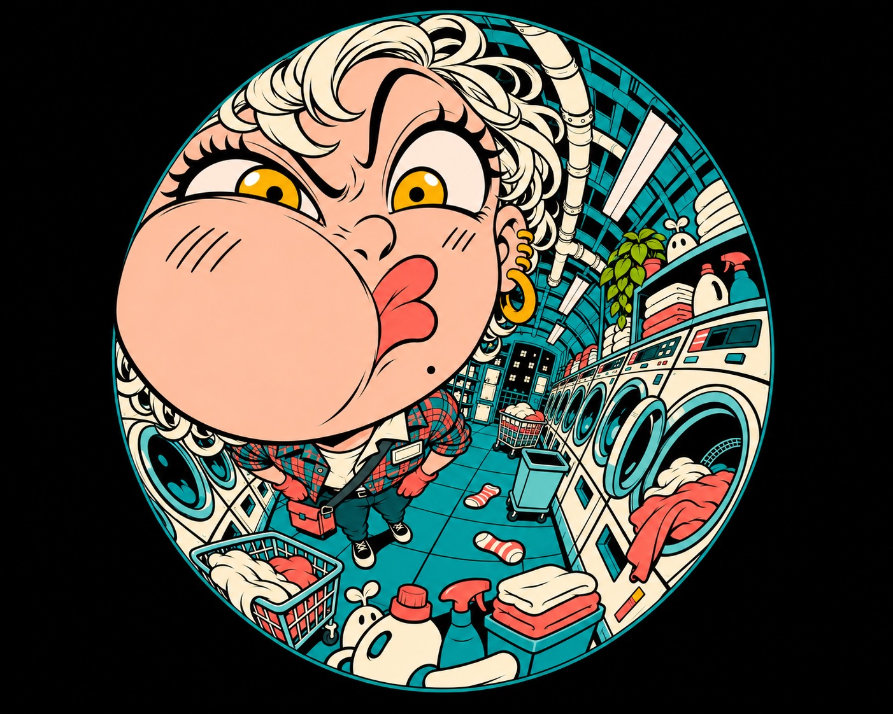
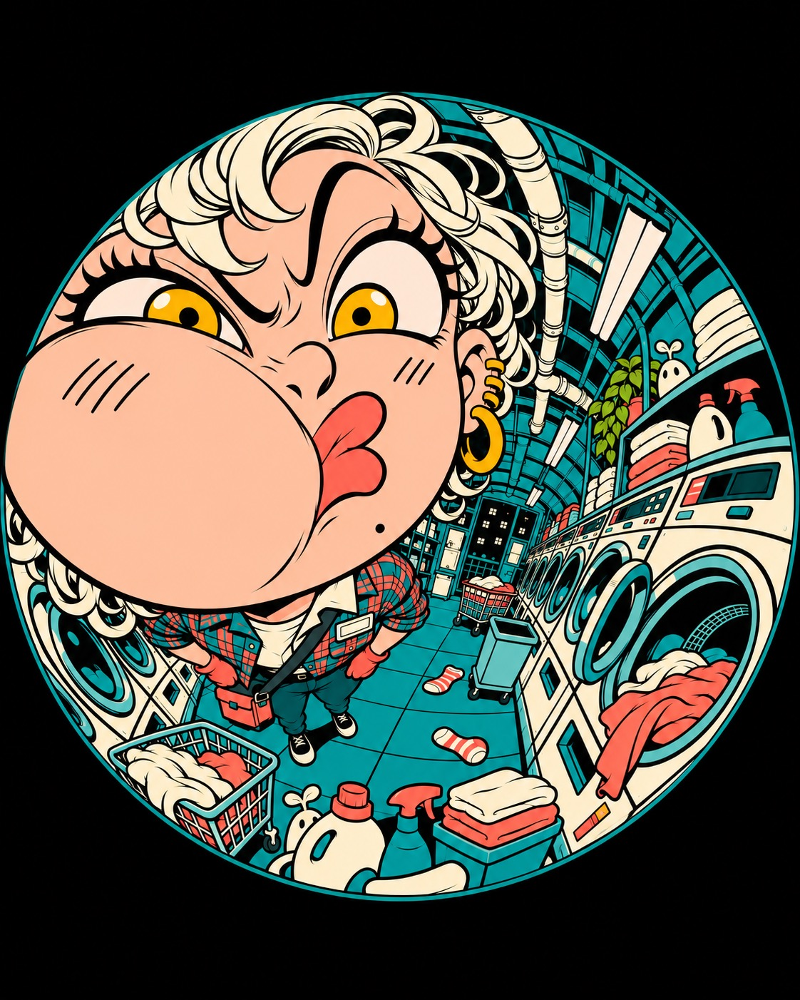
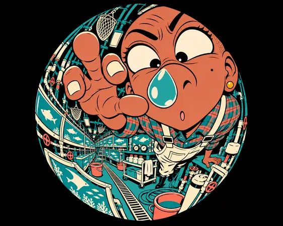
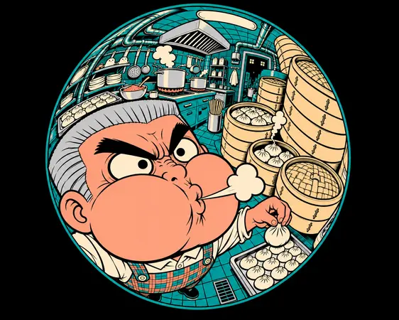
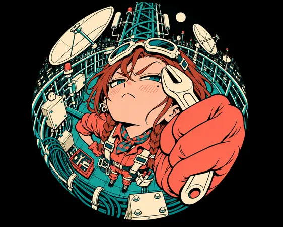

Type Posters · AI image style prompt
Nocturne Orbit Manga
Playful adult night workers through an extreme circular fisheye: lens-touching faces and hands, densely wrapped workplaces, hard black ink with flat teal, coral and cream cel color.


4 example cases
Same style.json, different subjects. Each case's values are in the examples section of the JSON.



What this style does
Playful adult night workers seen through an extreme circular fisheye: lens-touching exaggerated faces or hands, densely wrapped workplaces, hard black ink and flat teal/coral/cream cel color.
Signature traits
- Use a true circular 180-degree fisheye optical field on ink-dark ground: the scene ends at the lens circle and all architecture bows hard around it (R2/R3).
- Push the face or hand against the lens, magnified to at least about one third of the frame, with the body and far equipment sharply diminished (R1/R3).
- Each adult worker performs a different loud comic expression or gesture, never a generic pretty anime portrait (R1 transformed).
- Draw crowded workplaces with confident hard black ink and flat cel fills, at most one hard shadow tone; rendering must remain as simple as R2/R3.
- Keep teal/cyan environments, coral human warmth, cream skin/equipment and ink-black night depth across every case (R1/R4).
- Plaid may appear on exactly one garment per hero at most; every architectural, water and equipment surface remains non-plaid (R4 narrowed).
style.json
{
"schema_version": "2.2",
"style_version": "2.0.0",
"style_name": "Nocturne Orbit Manga",
"style_slug": "nocturne-orbit-manga",
"style_summary": "Playful adult night workers seen through an extreme circular fisheye: lens-touching exaggerated faces or hands, densely wrapped workplaces, hard black ink and flat teal/coral/cream cel color.",
"environment_variables": {
"ASPECT_RATIO": "4:5 or 5:4 (near-square keeps the lens circle filling the frame)",
"STYLE_FIDELITY_ANCHORS": "Joined immutable CORE and FLEX anchors",
"SOURCE_CONTENT_TO_AVOID": "Joined source identity and watermark exclusions",
"SUBJECT": "Original adult character and clothing",
"SUBJECT_ACTION": "Narrative action and playful equipment spirits",
"LOCATION": "Night-time work environment",
"DESIGN_DIRECTION": "Focal hierarchy and separate ratio plans"
},
"style_fidelity_anchors": [
"[CORE] Use a true circular 180-degree fisheye optical field on ink-dark ground: the scene ends at the lens circle and all architecture bows hard around it (R2/R3).",
"[CORE] Push the face or hand against the lens, magnified to at least about one third of the frame, with the body and far equipment sharply diminished (R1/R3).",
"[CORE] Each adult worker performs a different loud comic expression or gesture, never a generic pretty anime portrait (R1 transformed).",
"[CORE] Draw crowded workplaces with confident hard black ink and flat cel fills, at most one hard shadow tone; rendering must remain as simple as R2/R3.",
"[CORE] Keep teal/cyan environments, coral human warmth, cream skin/equipment and ink-black night depth across every case (R1/R4).",
"[CORE] Plaid may appear on exactly one garment per hero at most; every architectural, water and equipment surface remains non-plaid (R4 narrowed).",
"[FLEX] Shift the magnified focal mass among upper-left, upper-right, lower-left and lower-right positions; vary the warped scene around each action.",
"[FLEX] Use dense mundane workplace objects and occasional tiny non-toothy utility spirits, without copying source characters or props.",
"[FLEX] Keep wordless character art with optional tiny diegetic sign marks; do not add a headline, signature or ornamental border."
],
"source_content_to_avoid": [
"R1 winking schoolgirl, head-cat, pink sailor uniform, heart/egg bubbles and exact corridor",
"R2 glasses-wearing open-mouth laughing schoolgirl, cyan backpack, toothy monster crowd, subway and advertisements",
"R3 tongue-out cap character, blue-haired companion, SHOGUN wording and calligraphic signature",
"R4 head-on-arm slumped plaid-dress character, beer bar, photographic reflections and lower-right watermark",
"All watermarks, usernames, creator marks, platform symbols, logos, QR codes and copied signature compositions"
],
"visual_deconstruction": {
"grammar": "Exaggerated manga expression, huge near face/hand, circular barrel distortion and dense work environments.",
"signature": {
"R1": "Head-cat wink replaced with adult workplace physical comedy.",
"R2": "Subway toothy menagerie replaced with occupation-specific equipment, no copied laugh or glasses.",
"R3": "Tongue-out cap and lettering replaced with four distinct lens interactions and original adult identities; retain optical circle as explicitly requested.",
"R4": "Slumped bar dress replaced with active occupational gestures; plaid restricted to one work garment, no bar or watermark."
},
"fusion": {
"optics": "R2 deeply bowed space + R3 true circular optical boundary.",
"expression": "R1 close facial intimacy + R3 scale exaggeration, new gestures only.",
"finish": "R2/R3 flat black-ink cel finish takes precedence over R1 gloss and R4 soft reflections.",
"palette": "R1 teal/coral plus R4 night atmosphere, cream and ink from R2/R3.",
"clothing": "R4 plaid restricted to one garment.",
"density": "R2 crowded depth and R4 stocked workspace, drawn simply."
},
"energy": {
"density": "Dense inside the optical field: numerous overlapping work objects, no empty minimalist room. Black outside the circle is required lens ground.",
"layering": "Near face/hand, tiny receding torso, near equipment, bowed surrounding room, remote clutter.",
"disorder": "Low surface distress; playful asymmetric composition.",
"tension": "Extreme near/far scale and strongly bowed structural lines are essential.",
"finish": "Flat graphic cells; no gradient, bloom, glossy water or refined painterly finish."
},
"series_constants": {
"palette_roles": "Teal scene, coral warmth, cream skin and equipment, black ink and outside-lens ground.",
"light": "Nocturnal color blocks, one flat shadow tone, no rendered glow.",
"layout_kit": "Actual circular lens boundary, heavy radial barrel deformation, huge close focal mass; no decorative iris strips.",
"title_treatment": "No primary text."
},
"balance": "R1 expression intimacy; R2 finish and content density; R3 circular optics; R4 night palette and clothing-only plaid. User correction takes precedence over former ornamental design-layer requirements."
},
"composition": {
"structure": "A true circular fisheye scene on solid black ground, not a normal scene in a circular frame. Lens circle diameter about equal to the frame's short side (it may overflow the short side slightly, up to about 10%). All four corners show clear solid black outside the circle. In 5:4 the top and bottom of the circle stay visible. Never stretch the lens into an oval; visible curved limits are actual scene boundaries. No cream swirls, rings or decorative overlays.",
"portrait": "Native 4:5. Keep the full lens circle inside the frame, with at most slight short-side overflow under the series rule; all four corners remain solid black. Close face/hand fills at least about one third of frame and receding workspace bends vertically around the lens.",
"landscape": "Native 5:4. Keep the circle top and bottom visible and all four corners solid black; retain circular projection, enlarge foreground to at least about one third of frame and spread bowed workplace laterally. Generate directly at this ratio, without cropping a 16:9 generation or adding padding.",
"variation": "Spin upper-left squeezed face; glass upper-right crossed eyes; steam lower-left puffed face; sky lower-right gigantic saluting hand and spanner."
},
"typography": {
"class": "Incidental hand-rendered block sans sign fragments only",
"primary": "No required primary text, no headlines or advertising slogans",
"texture": "Small scene-bound sign marks allowed; exclude recognizable brands and source words"
},
"color_palette": {
"ink": "#101B23",
"cream": "#F4E8C5",
"cyan": "#40BBC5",
"jade": "#587E6A",
"coral": "#E56A61",
"amber": "#E9B455",
"moss": "#899478",
"roles": "Teal/cyan environment; coral skin warmth and workwear; cream skin/equipment; black contour, shadows and outside-lens ground. Jade, amber and moss subordinate."
},
"image_treatment": {
"line": "Hard black ink contours and sparse functional internal strokes, R2/R3 comic simplicity.",
"shading": "Flat color with at most one hard-edged shadow tone.",
"texture": "No soft gradients, grain, painterly effects, glossy water, bloom or optical fringe. Small hatch marks are optional, not extra rendering.",
"optics": "180-degree circular fisheye with strongly convex bulging near face/hand, tiny body, architecture curling around the perimeter."
},
"design_rules": [
"True optical circular boundary and heavy barrel distortion are the style priority.",
"Each hero has a specific different comic expression or gesture and a near face/hand occupying at least about one third of the frame.",
"Plaid stays on at most one garment per hero, nowhere else.",
"Render dense content in simple hard black ink and flat cel color.",
"Recompose each ratio with the same identity and action.",
"Inspect all four reference comparisons and all image corners; no copied signatures or watermark."
],
"do": [
"Make near/far optical scale startling.",
"Keep many clearly drawn workplace objects around the close comic focal point.",
"Vary focal quadrant and preserve character identity between ratios."
],
"avoid": [
"Weak wide-angle inside a decorative circle, cream/black swirl border or oval lens.",
"Generic pretty anime expression, wink, tongue-out, glasses laugh or head-on-arm slump.",
"Plaid floors, walls, water, tubs, steamers or machinery.",
"Soft glow, glossy water, painterly gradients or rendering more refined than R2/R3.",
"Source signatures, source characters, copied layouts and any watermark."
],
"prompt_template": "Create a native {ASPECT_RATIO} flat-ink manga illustration of an adult night worker. The image is captured through a true circular 180-degree fisheye, with huge lens-touching foreground and violent barrel distortion, not an illustration surrounded by a decorative border.\n{STYLE_FIDELITY_ANCHORS}\nHero: {SUBJECT}\nSpecific comedy: {SUBJECT_ACTION}\nDense setting: {LOCATION}\nPlacement and ratio: {DESIGN_DIRECTION}\nTeal, coral, cream and black. Keep the face/hand about one third of the entire frame or larger. Make the world visibly wrap around the lens edge; outside the actual optical image is dark. Keep dense scene content but draw it with simple flat cells and hard black ink like references R2/R3. No primary text.\nExclude: {SOURCE_CONTENT_TO_AVOID}",
"negative_prompt": "weak fisheye, normal perspective in circular frame, ornamental cream swirl, oval lens, generic pretty face, wink, tongue out, glasses laugh, slumped head, plaid architecture, glossy water, painterly gradients, bloom, smooth airbrush, copied signatures, watermark, logos, disconnected limbs",
"examples": [
{
"case_name": "spin-cycle",
"values": {
"SUBJECT": "An adult woman courier with short ivory curls and amber eyes, coral gloves and a single teal/coral plaid work jacket.",
"SUBJECT_ACTION": "Presses one cheek hard into the lens glass, flattening it into a broad asymmetrical squish, lips pushed sideways into a comical pout, both eyes open with one eyebrow high; small body recedes behind huge face.",
"LOCATION": "Midnight laundromat: crowded washer banks, open drums, laundry carts, detergent bottles, folded towels, pipes and lost socks; plain unpatterned floor and machine bodies.",
"DESIGN_DIRECTION": "Huge squished face UPPER LEFT. Portrait: washers and ceiling pipes curl around a falling vertical corridor below/right. Landscape: washer banks bow across width behind the upper-left face. The glass squish, not a hand-held cheek pose, is the focus."
}
},
{
"case_name": "glass-tide",
"values": {
"SUBJECT": "An adult dark-skinned aquarist with shaved head, amber ear stud, cream waterproof bib overalls over one teal/coral plaid shirt.",
"SUBJECT_ACTION": "Goes dramatically cross-eyed at a single large drop stuck on the lens directly in front of the nose; raised brows and tight tiny round mouth, cheek and nose magnified, diminutive torso behind.",
"LOCATION": "Night aquarium service gallery: crowded tanks with flat teal fish silhouettes, filters, hoses, valves, sample bottles, hanging nets and maintenance buckets; water flat and opaque graphic color, no plaid or glossy reflections.",
"DESIGN_DIRECTION": "Huge face UPPER RIGHT. Portrait: stacked tank edges bow in deep U curves into lower-left; nose almost touches drop on lens. Landscape: tank canyon sweeps widely behind the right face. No glass dome or bottle frame."
}
},
{
"case_name": "steam-orbit",
"values": {
"SUBJECT": "An older male cook with silver flat-top hair, very thick brows, cream shirt and one teal/coral plaid apron.",
"SUBJECT_ACTION": "Puffs both cheeks absurdly round and blows a small hard-edged cream steam puff through pursed lips; eyebrows sternly concentrated, eyes wide, huge inflated face close to lens and body small behind.",
"LOCATION": "Compact midnight dumpling kitchen: many plain bamboo steamers, lids, trays, ladles, chopsticks, dumplings, hanging utensils, pipes and stock pots; plain walls and floors, no plaid on baskets or surfaces.",
"DESIGN_DIRECTION": "Huge puffed face LOWER LEFT. Portrait: steep bowed basket towers rise above and right; foreground steam curl small enough not to cover cheeks. Landscape: kitchen equipment forms a broad warped upper semicircle behind the left-lower face."
}
},
{
"case_name": "sky-spanner",
"values": {
"SUBJECT": "An adult antenna technician with auburn braids, goggles pushed onto forehead, coral coveralls, cream safety harness and one small teal/coral plaid neck scarf.",
"SUBJECT_ACTION": "Makes a deliberately over-serious mock salute using a spanner gripped in an enormous near-lens gloved hand; one eyebrow arched and lips tight in comic military seriousness. Saluting hand and wrench nearly touch lens, face just behind, body and secured harness recede.",
"LOCATION": "High-altitude rooftop maintenance at night: reception dishes, antenna masts, curved safety rails, bolts, cable coils, tool pouches, service boxes and tiny distant city windows; no patterned floor or dish.",
"DESIGN_DIRECTION": "Bold case: gigantic hand and spanner LOWER RIGHT, occupying at least one third of frame, face above/behind it. Portrait: rails and mast bow into an overhead dome, tiny boots far below. Landscape: cables and catwalk wrap across width; same mock salute, hand stays lower-right. No enormous boot as focal point."
}
}
],
"category": "Type Posters"
}